Sahne sizin, arkası bizde.

Sis çekildi, i7 kaldı
BMW i7 lansmanı. Dairesel truss, mavi huzmeler ve sis tek bir araca bakıyor.

Dün showroom, bu akşam sahne
Kosifler Oto Samsun lansmanı. Truss, ışık ve marka ekranı showroomun içine kuruldu.

Üç, iki, bir, örtü
Yeni BMW iX3 açılışı. LED ekranlar ve zemindeki moving head sırası aynı ana ayarlı.
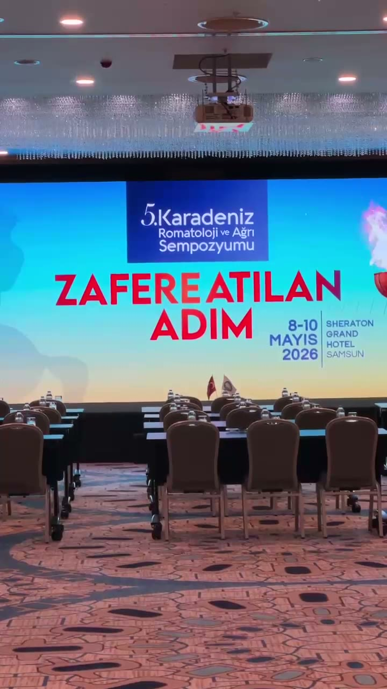
Hekimlerden önce biz geldik
5. Karadeniz Romatoloji ve Ağrı Sempozyumu. Salon, ilk katılımcıdan önce hazırdı.

Kürsüde hekim, ekranda slayt
8–10 Mayıs, üç gün süren oturumlar. Kürsü mikrofonu ve LED ekran konuşmacıdan konuşmacıya aynı netlikte.
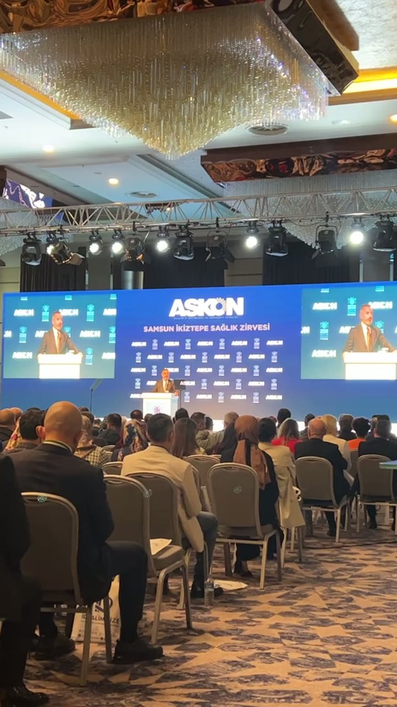
Salon dolu, son sıra dahil
ASKON zirvesi. Sahne boyu LED ekran, kürsü ve dolu salona yeten ses.

Ses, deneme, bir, iki
Telsiz el, kürsü ve headset mikrofon. Konuşmacı hangisiyle rahatsa onunla.
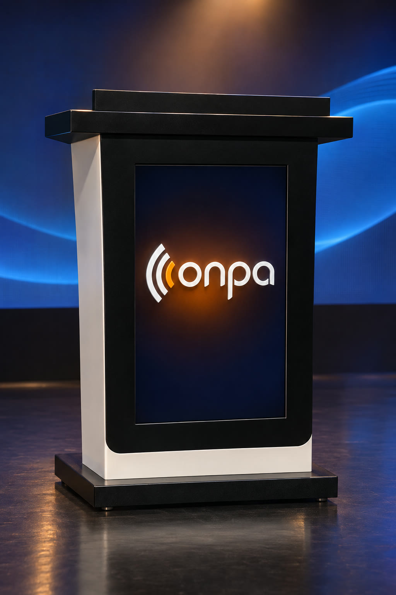
Kürsü de konuşur
Önde seyirciye dönük dikey ekran: etkinlik logosu, konuşmacı adı ya da sponsor görseli.
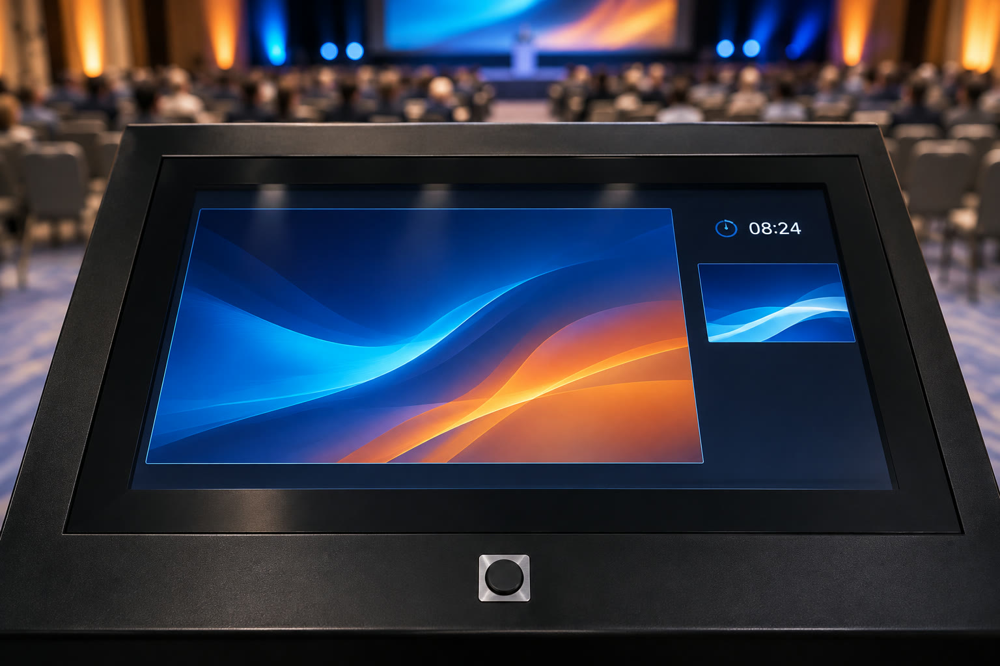
Notlar konuşmacının önünde
Üstte konuşmacıya dönük dokunmatik ekran: sunum, sıradaki slayt ve süre.
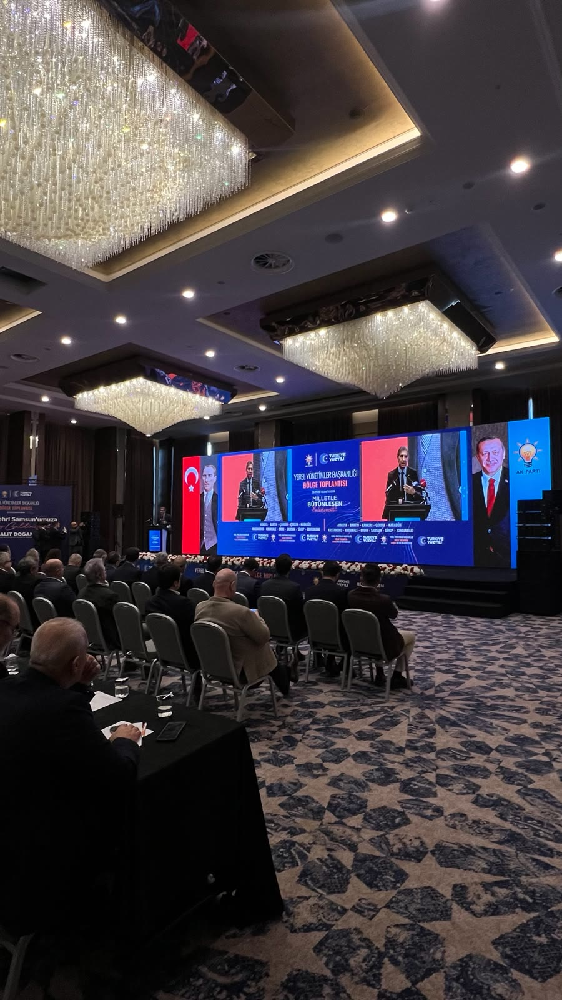
Protokolde tekrar çekim yok
Kalabalık bir protokol toplantısı. Salon boyu LED ekran, ilk seferde doğru ses.
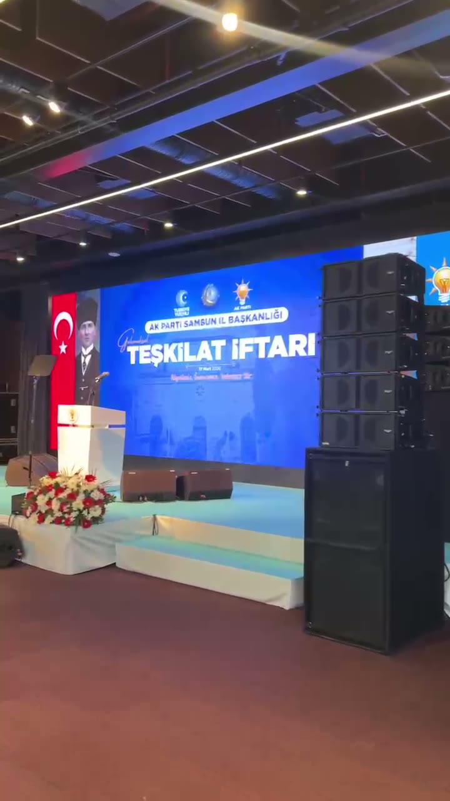
Son masa da davetli
Büyük bir salon daveti. Line array, LED ekran ve kürsü misafirlerden önce kuruldu.

Tavan yoksa truss var
Açık avluda kurumsal gala. Truss sahne kuruldu, sponsorlar LED ekranlarda yerini aldı.

Göremedim diyen kalmasın
100 m² LED ekran. Yan ekranlarla sahne her masadan görünür.
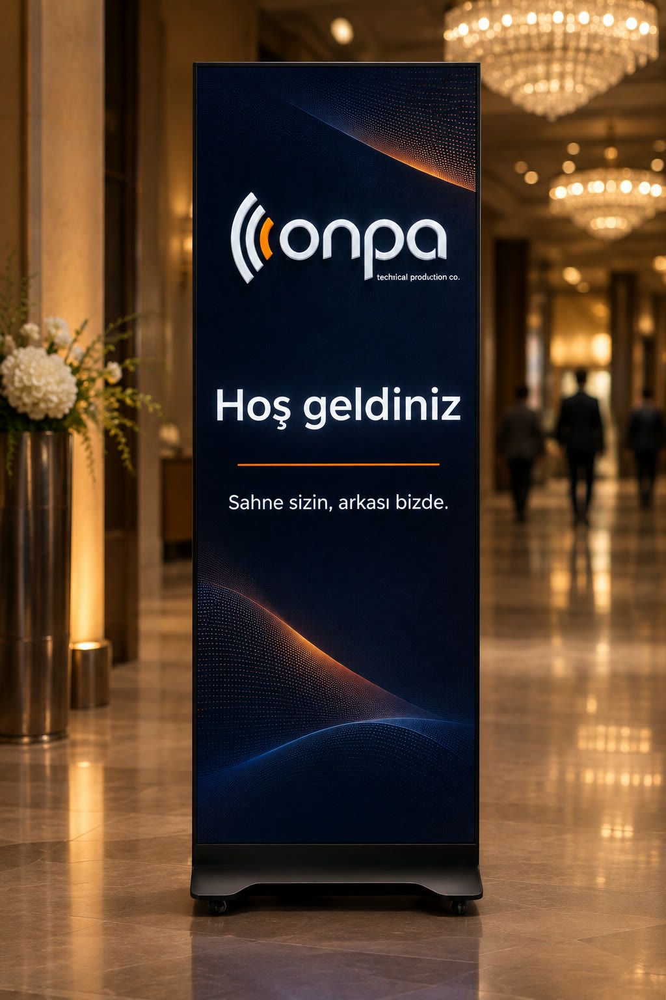
Kapıda ilk o karşılar
Tekerlekli, ince çerçeveli dikey LED ekran. Karşılama, yönlendirme ve sponsor görselleri için.

Dördü bir arada, tek ekran
Elimizdeki dört LED poster yan yana birleşip tek bir geniş ekrana dönüşür.
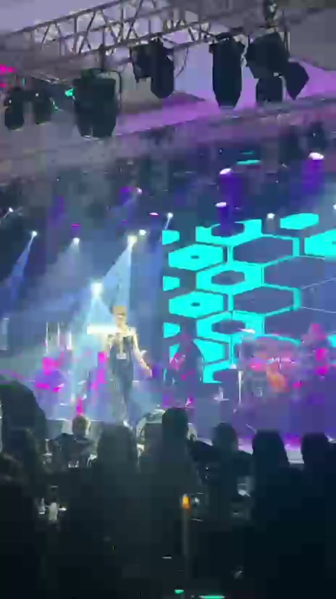
Avizeler bu gece izinli
100’den fazla moving head. Beam, spot ve wash ile balo salonu konser sahnesine döner.

Binlerce kişi, tek nakarat
19 Mayıs konseri. Vertec line array ve LED yan ekranlarla binlerce kişilik açık hava sahnesi.
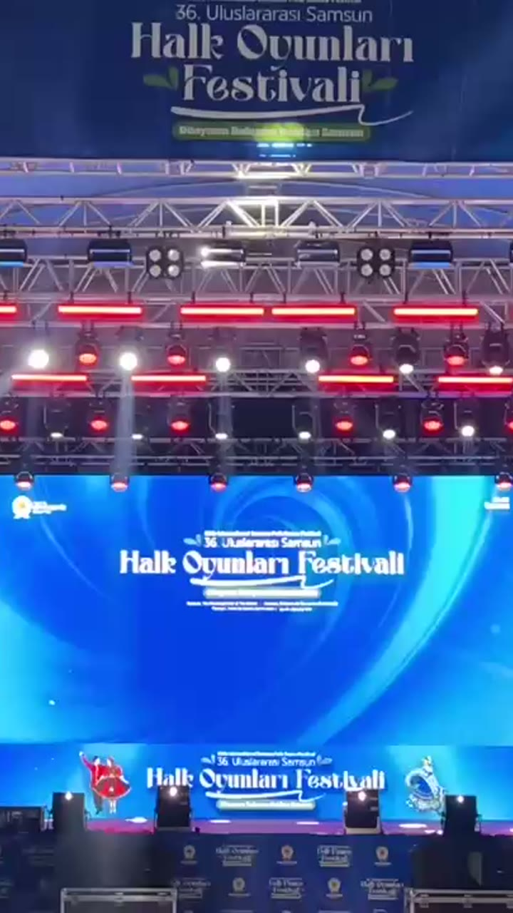
Aynı sahnede dünyanın adımları
56. Uluslararası Samsun Halk Oyunları Festivali. Truss çatı ve dev LED ekran.
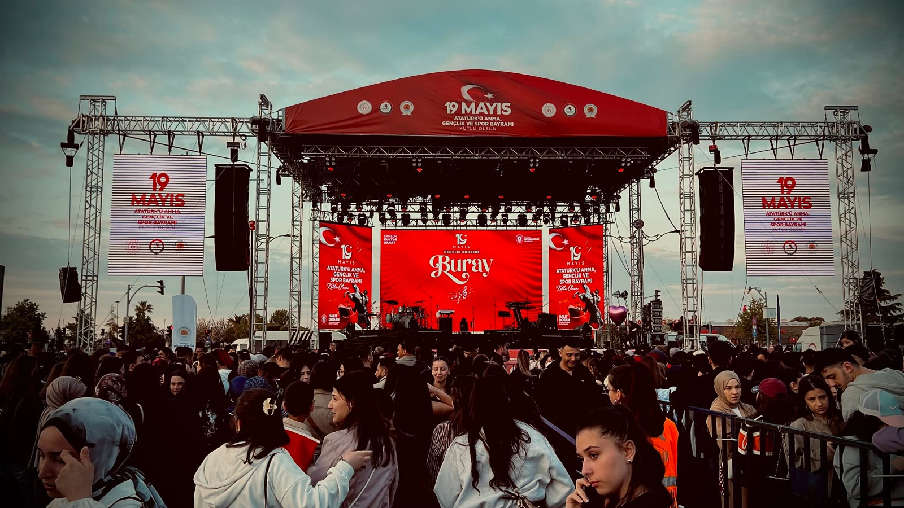
Hepsi bizim depodan
JBL Vertec · 20 kabin
Audiofocus Ares 8 · 16 kabin
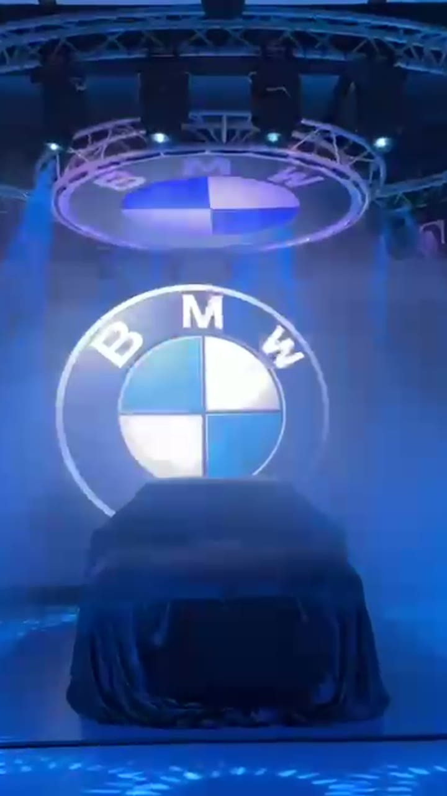
Mikrofonu bize bırakanlar
- BMW Lansman
- Coca-Cola CCI Kurumsal
- British American Tobacco Kurumsal
- ASKON Zirve
- Sheraton Otel Otel
- Kosifler Oto Lansman
- Tüyap Fuar
- Esfa Fuarcılık Fuar
- Samsun Büyükşehir Belediyesi Kamu
…ve sahnesini bize emanet eden daha nice marka, kurum ve organizasyon.

Arayın, ses verelim.
Tarihi söyleyin, keşfe gelelim.
- Hakan Paskap0542 523 32 74
- Ercan Paskap0542 770 77 74
- E-postabilgi@onpases.com
- Instagram@onpases